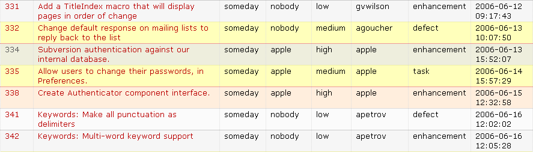

Requirements as Tickets (or, Hierarchy to the Rescue)
Several of the small companies we’ve spoken to recently have asked whether it would make sense to use an issue tracker to manage requirements. It’s superficially sensible: if you can create tickets for feature requests, why not create them for the needs that drive those features?
After pondering this for a (short) while, we think it’s workable, but with caveats. The first is that stakeholders must be able to express relationships between tickets, such as “Feature X is needed to satisfy business need Y”, “P is an exception to the general rule Q,” or, “E must be done before F and G, which in turn must both be done before H can be started”. Injecting these cross-references must be really, really easy: stakeholders cannot be required to type in lots of ticket numbers (they might be willing to do this once, but they won’t keep them all up to date as tickets are split, merged, added, and removed during the course of the project).
The second caveat is that the system must give stakeholders a way to organize the tickets into a sensible linear order. Hypertext is all very well, but wandering around a twisty maze of little requirements is not an effective way to understand a complex system. Linearization gives people who already know the problem architecture a way to help people who don’t, learn.
We’re still thinking about the first (tag-directed proximitization in an unstructured graph plus link-drawing?), but we have an idea for the second. Right now, most ticketing systems’ standard display is a flat list sorted by ticket ID, filing date, priority, or something of that ilk (Figure 1).

What if stakeholders had another view, in which they could organize tickets like this:
| Tagging System | ||
| 281: In-place editing | ||
| 407: Keyword completion | ||
| 399: Explicit "submit" | ||
| 117: Colorization | ||
| 145: Red-purple-blue spectrum | ||
| 214: Must be legible when printed B&W | ||
A little AJAX ought to be enough to let users move things up and down, drag them left and right, or create a heading that isn’t associated with an actual ticket. The system would store this structure as a first-class entity; tickets that hadn’t yet been manually organized wouldn’t appear in it, while tickets that had been closed would be crossed out until a human being said, “Yeah, take it out of the hierarchy.”
I don’t know if this would be a sensible way to organize issue tickets (which often relate to several components of the system). I think it has more of a chance of working with requirements; I’d be interested in hearing what you think.